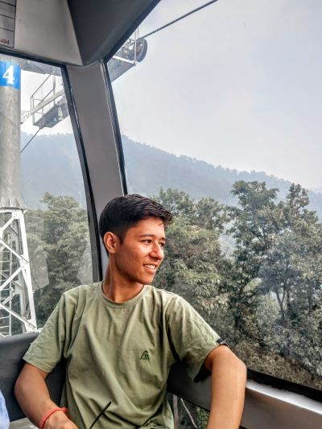

About Me
Get to know my journey and aspirations
Content inspired by nayanacharya.xyz

My Journey
.Hey! I'm Nayan, a student from Nepal with a strong passion for technology, innovation, and creative problem-solving. I'm deeply involved in web development, open-source, and science fiction—constantly learning and exploring new ways to bring ideas to life.
The Journey about Coding begin with the Covid-19 pandemic. While everyone was locked up to thier houses. I stated to explore the world(i mean digital).And this thing presented me with different and cool things.